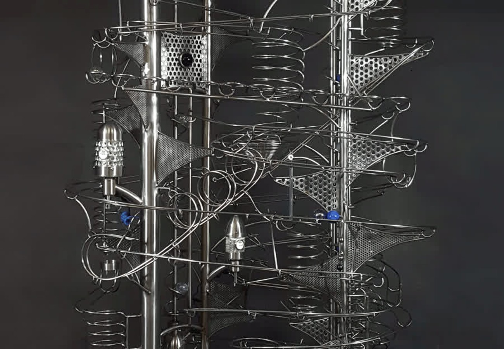

Made by the artist
Every work is handcrafted by Robert, signed and dated, with no two sculptures exactly alike.
The artist
Designer, maker and kinetic artist behind Objects In Motion.

Artist statement
Order and beauty emerge from moving objects that work in harmony.
A lifelong fascination
Since childhood, Robert has been enthralled by design and the intricacies of mechanisms. He has worked in wood, metal, clay and stone for much of his life.
Growing up on the West Coast of Canada shaped his appreciation for beauty in nature. He later lived, studied and worked in Edmonton and Eastern Europe, and now creates near the Rocky Mountains in the Bow River Valley of Cochrane, Alberta.
His sculptures turn serious forces — gravity and friction — into something playful, imaginative and calming. The viewer understands that every piece is where it needs to be, even when the path is not immediately obvious.

The studio language
Stainless steel is the primary material. Wood, lighting and found or repurposed objects sometimes enter the work when they add character or meaning.
Larger sculptures can contain thousands of welds. Every curve is shaped and every mechanism tested.
What shapes the work
Every work is handcrafted by Robert, signed and dated, with no two sculptures exactly alike.
Mechanisms, gravity and friction are not hidden; they become part of the visual language and the experience.
The work is created in Cochrane, near the Rocky Mountains and the Bow River Valley in Alberta, Canada.
Marbles, tracks and mechanisms resolve apparent complexity into a repeated rhythm that can feel calming and playful.
Visit the work
For commission, exhibition, designer or gallery enquiries, begin a direct conversation about the work and the space you have in mind.
Contact the studio ↗